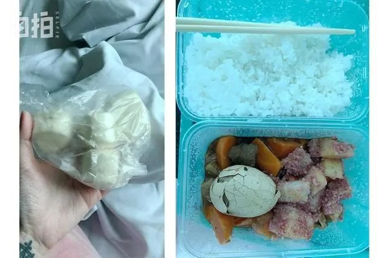

特稿|仁心赴国难：五位白衣战士最后的日子
原文链接 备份链接 【财新网】（记者 吴红毓然 王梦遥 杨睿 冯华妹 唐爱琳 苑苏文）2月23日，是医护人员的又一个苦难日。 这一天，湖北省武汉市协和江北医院（武汉市蔡甸区人民医院）、江苏省南通启东市卫健委、海南省卫健委、湖北省孝感市中心 …
澎湃新闻记者 沈文迪 温潇潇
2月15日，武汉迎来了庚子鼠年的第一场雪。
这天上午，李悦（化名）的父亲因患新冠肺炎，在经历两个多小时的抢救无效后去世。
而就在一天前，作为早前新冠肺炎的康复者，李悦冒着严寒、拖着还有些虚弱的身体，踩了一路共享单车重返武汉市金银潭医院，成为该院首位自愿捐献血浆的康复者。抱着一丝希望的她，想用自己的血浆去救父亲。
希望还是破灭了。这一个多月来，李悦就像做了无数场噩梦：先是癌症晚期的母亲病情恶化；接着疫情爆发后，自己和父亲先后被确诊为新冠肺炎；在父亲离去后，母亲的治疗又一度陷入僵局，最终离去……
如今李悦独自守着空荡荡的屋子，无比希望这段记忆也一同被隔离尘封。
三口之家
这原本是个幸福美满的三口之家。
李悦的父亲67岁，退休后父亲喜欢宅在家里，摆弄相机、修图看电影；母亲63岁，热爱美食的她喜欢跳广场舞、打腰鼓，还和伙伴们到各地演出。

李悦的父亲和母亲 受访者供图
他们的独女李悦从小就很优秀，北京大学毕业后，2016年她去到英国工作，未来一片光明。
初到英国的日子并不孤单，李悦时常都会和母亲视频聊天，隔着八小时的时差讲述着彼此的生活与见闻。
但2016年底开始，李悦慢慢发现母亲时常拒接视频电话、智能语音。问起来，母亲说自己在温泉休养，信号不佳。
感觉到异样的李悦开始到处询问亲人，但得到的回复都是没事，李悦之后想来，觉得应该是母亲给他们打了招呼，不让自己担心。
但母亲的病情终究还是被发现了。
2017年夏天，李悦假期回国后才知道，母亲已经是直肠癌晚期，而且做过了一轮化疗和手术。李悦瞬间崩溃了，她很难想象，母亲是如何瞒着她独自把病痛扛了下来。
李悦的父亲起初也是和李悦一样的反应，懵了好几天，在母亲的支撑和鼓励下才慢慢接受现实。
在接下来的三年里，夫妻俩的爱好都停了。父亲每日奔波在家和医院之间，给母亲送饭、陪护、擦洗身体。由于直肠癌患者比较特殊，身上开了一个造口用于排泄，更换和清理工作也由父亲承包了。
在母亲患病后，李悦原本想要回国陪伴，但母亲不允许她这么做，去国外发展是她对女儿的期望。就连李悦回国后，母亲也不愿意她来医院，她不想女儿看到肿瘤科病人的痛苦。
从这时起，母女俩开始天天视频，起初母亲会说很多话，但随着病情的加重，她能说话的时间越来越短，画面中的母亲也越来越瘦。
“我妈妈是非常好强的一个人，就算疼，她也不愿意给人添麻烦。有些病人会呻吟，会找护士，她只会用手紧紧地攥着枕头，眉头皱得很紧，一直忍着。问她是不是很疼。她会点头，但不吭声。”李悦说。
2019年12月，在第三轮治疗不见效果的情况下，日渐虚弱的母亲无法进食，开始靠打营养针维持生命。但一段时间后，母亲想要停针，和家人度过最后的日子。此时母亲每天要打45毫克吗啡，服用强效止痛药，但癌痛仍然让她备受折磨。
某天在视频的时候，父母告诉李悦，母亲已经写了不抢救声明：停针后出现任何需要急救的情况，希望医生不要采取任何急救措施。
李悦说，自己是不能接受这个决定的，但等她亲眼看到母亲有多痛苦时，她才明白，母亲不是为了自己而活，而是为了自己和父亲而活。
然而还没等到一家人做出最后决定给母亲停针，新冠肺炎爆发。另一场意外冲击了这个家庭，母亲必须坚持下去，她最爱和最爱她的人还在等待着她。
感染
2020年1月9日，母亲突然问李悦能否回国，李悦一听知道母亲可能时日无多，第二天就从伦敦飞回了武汉。

李悦的机票 受访者供图
回国后医生告知她，必须24小时陪护。一是生活上的照料，二是母亲的情绪也要安抚。一位护士偷偷告诉她，母亲痛得一个人发脾气，担心会轻生。
李悦义无反顾地24小时待在医院病房，父亲中午坐着公交来送饭，一直到晚上7、8点再坐公交回家。
此时此刻，一家人全然不知新冠病毒的传染性有多强。李悦说，从回国后，她只在室外戴口罩，在医院里并未做防护，回家后也未进行消毒措施。
直到1月19日，李悦注意到病房的医生和护士开始戴起了两层口罩，里面N95、外面外科口罩；平时不戴帽子的医护人员开始戴起了两层帽子，把头发都收了进去。
一位医生把李悦叫了出去，告知她家属在病房时也要把口罩戴上，说外面的情况比想象的严重的多。
从这时开始，李悦真正警惕起来，匆匆抢了一盒口罩。然而最让人担心的事还是发生了。
之后几天里，李悦一直觉得嗓子痒，想咳嗽。1月25日中午，她开始发烧和轻微咳嗽，她想着等一天看看，也许只是医院环境干燥，睡一觉可能就好了。
但第二天过来情况没有好转，她和父亲一起去了发热门诊，她的CT显示肺部有斑片状的磨玻璃影，父亲也是如此，检查结果符合新型肺炎特征。但因为没有进行核酸检测，他们还无法被确诊。

父亲（左）和李悦（右）的CT结果 受访者供图
从1月27日开始，李悦和父亲没法继续留在医院陪护母亲，必须在家隔离，他们请了一位护工阿姨来照顾母亲。但母亲说自己一个人能行，去上厕所也不会麻烦别人，硬撑着自己去。
回家后的父亲一直挂念着母亲，提到母亲就哭，他懊恼自己无法陪在爱人身边，只能通过电话进行联系。
更让他懊恼和自责的，是这个时候让女儿回国，感染上了病毒。
几经周折后，父亲和李悦分别于1月30日和31日被收治到武汉市第八医院，两人在不同楼层的两个病房里。
实际上李悦在住院前就已经退烧，住院后她托人买了丙球蛋白给自己和父亲用上，加上抗病毒和消炎药，她的病情很快就稳定下来。
但父亲则情况不佳。他从1月31日凌晨开始发烧，体温39.5摄氏度，由于患者太多，他没有接受更多治疗，只是靠自带的退烧药强撑着。
医生也告诉李悦，此时第八医院只是临时安置病人的地方，连核酸检测都做不了。一天内父亲所在的楼层已经走了三个病人。
医生还告诉李悦，新冠肺炎需要靠自身免疫力来做斗争，但在医院，早饭、午饭是饺子，晚上是米饭和冬瓜，家里也没人可以给他们送饭，此时李悦甚至对住进医院萌生悔意。

2月1日李悦在住院时的早饭（左）和午饭（右） 图来自“自拍”，经受访者同意发布
她只能通过外卖来给自己和父亲补充营养，由于隔离，她始终无法见到父亲。直到2月3日，她得知被确诊新冠肺炎的父亲需要被转到金银潭医院。
在送父亲上救护车时，她发现父亲已经很虚弱，但她没能想到，这会成为永别。
等不到的血浆
李悦的父亲被转到金银潭医院后渐渐有了好转，能够自主呼吸，氧饱和度有所提升。但医生告知她，老人的炎症始终无法消除，一直在发烧。期间李悦三餐都会给父亲打电话，鼓励他吃东西。
2月5日，被确诊新冠肺炎的李悦也被转到了金银潭医院，期间第二次CT检查显示，她的肺部已经有了明显好转。在三次核酸检测为阴性之后，她于2月9日出院。
之后她回家静养，一边照顾着母亲的情绪，同时还要时刻揪心着父亲的情况。父亲告诉她，出院后就待在家里，母亲那边也不要去，保护好自己。
2月12日，她接到医生电话，得知父亲病情恶化，刚被抢救回来。医生告诉她，父亲的情况已经很危急，中西药都用过了，仍然没有好转。李悦除了着急和无奈，没有别的办法。
偶然的情况下，她看到新闻说江夏区有11个病人在接受了新冠肺炎康复者捐献的血浆后，治疗有了明显效果。她立马打电话给医生，询问自己是否可以捐献血浆，得到了肯定的答复。
武汉市金银潭医院院长张定宇向澎湃新闻介绍，一个人的血浆大概可以救两三个人。血浆疗法不能说输了血浆就保证病人百分之百存活，但是拥有血浆以后会给危重患者增加存活机会，也为医生救治提供时间。
2月14日，李悦毅然赶往金银潭医院。由于没有交通工具，社区也无法安排车辆，她只能和出院时一样，自己骑了六七公里的共享单车来到医院。
在献血的过程中，她有些紧张，一旁穿着防护服的医生不停地给她安慰和解释，“0.01秒，0.01秒的疼痛，就好了。”
抽血的过程很顺利，她被告知自己的血浆还需要被送到实验室进行病毒检测、灭活后检测抗体的成分，如果有效的话还要进行提取和加工，最后提供给患者。

李悦捐献血浆 图来自梨视频视频截图
等回家后，她开心地给父亲打去电话，告诉他自己已经献了血浆，让他再坚持几天，也许很快就会有“解药”用到他身上，这样他们就可以一起去看母亲了。
电话那头，父亲喘得非常厉害，说不了几句话。李悦并不确定，父亲是否听到了自己的鼓励。
李悦心里明白，血浆从抽血到用于治疗患者大约需要七天时间，父亲用上的可能性有些渺茫，但她还是抱着一丝希望，希望父亲能够再坚持一下。她说，“就算我爸爸用不上，其他的患者也可能可以用得上。”
希望只持续了一个晚上。第二天上午八点，李悦接到电话，父亲被送往ICU进行抢救；两个小时后，又一个电话打来，父亲去世了。
没有最后一面，没有遗言，李悦就这样“告别”了父亲。
所有的事后手续都在手机上办理，她添加了一个叫汉口殡仪馆的微信号，在发送了所有的证明后，当晚父亲的遗体就被火化。
2月15日那天，武汉下起了雪，医院让李悦尽快去医院领取父亲的遗物，但恶劣的天气加上悲伤的心情，李悦已经走不动一步路。
她缓了一天后，才在武汉志愿者的帮助下，找到一辆电动共享单车，迎着悲伤的雨雪，她又一次去了金银潭医院。
未完成的告别
“我觉得她心里应该是知道的，因为之前我爸爸都会跟她联系，然后他们现在已经很长一段时间都没有联系了。”李悦哽咽地说，自己还没把父亲过世的消息告诉母亲。
此前母亲想停掉营养针慢慢离去，但因为丈夫和女儿被感染隔离，她必须再坚持一段时间，再见上他们一面。
李悦自责地说，“我觉得这也挺自私的，我们想让她坚持到我们出去，能陪她走完最后一程。”
在李悦捐献血浆后没多久，母亲所在医院的院区被征用收治新冠肺炎患者。医院护士告诉她，留在医院的非新冠肺炎患者会有交叉感染的风险，而且由于部分医护人员被调走，母亲的照料无法像之前周全，所以建议她把母亲接回家。
但李悦刚康复不久，在家也没法给母亲打针，只能将她继续留在医院。随后的日子里，母亲的营养针中断了，李悦给母亲打电话时，母亲的意识已不太清醒。

李悦母亲所在的病房 受访者供图
绝望的李悦一一给医生和护士打去电话，得到的都是无奈的回复，其他医院也无力收治癌症晚期病人。此时本应该一周更换一次的造口袋由于父亲的离去，已经两周无人更换，李悦更是心急如焚。
她只能到处求人，多次与医院沟通之后，医护人员2月17日深夜把母亲的止痛针打上。
2月18日，武汉市卫健委官网发布最新消息，公布全市非新冠肺炎特殊患者医疗救治医院名单，李悦母亲所在的医院被列为恶性肿瘤定点救治医院，她的营养针终于在当天重新打上。
然而护工告诉李悦，母亲的精神状态很差，说话只能嗯嗯啊啊，她担心母亲撑不了多久。而她目前还处于隔离期，小区被封闭，无法正常进出，她甚至都开始担心是否能见到母亲最后一面。
2月20日上午，医生给李悦打来电话，由于母亲的情况十分危急，医生向李悦确认，母亲之前签下的不抢救通知书是否还有效。
忍着悲痛，李悦表示尊重母亲的意愿，让母亲安稳地离去，她不希望母亲再遭受病痛的折磨。下午，医院的电话再次打来——在父亲离去5天之后，李悦又失去了母亲。
当天，李悦带着一件中国风外套、白色裙子以及鞋袜走到小区门口。生前母亲告诉她，这是自己旅游时穿的衣服，她希望自己在离开人世的时候再穿上，就当是又出了一趟远门。
然而李悦的姑妈打来电话，老人在电话里哭着劝她不要再去医院，这个家庭已经失去了太多，她不希望李悦再出任何一点事。虽然满是遗憾，李悦还是答应了，她将母亲的身后事交给了护工，独自回了家。
家里还是父母离开之前的样子。每天早上，李悦会做做广播操。经过复查，她已经没有新冠肺炎的症状，但仍在咳嗽，做操有助于她恢复。家里物资充足，她喜欢做饭，心情会好很多。
每当胡思乱想的念头袭来，她会看看电视，看看窗外的景色。关于已经发生的厄运，她劝自己不要去想。
她说，父母已经离去，她一个人要养好身体，这是父母生前所希望的，也是身边的亲友所关心的。她还在期待雪停的那一刻，这样她就能走出家门，感受到春日的阳光，再去和父母好好地告别。
戳这里进入
“全国新型冠状病毒感染病例实时地图”↓↓↓
本期编辑 周玉华
推荐阅读


原文链接 备份链接 【财新网】（记者 吴红毓然 王梦遥 杨睿 冯华妹 唐爱琳 苑苏文）2月23日，是医护人员的又一个苦难日。 这一天，湖北省武汉市协和江北医院（武汉市蔡甸区人民医院）、江苏省南通启东市卫健委、海南省卫健委、湖北省孝感市中心 …
原文链接 备份链接 致敬所有奋战在一线的医护人员。 武汉的一月，气温总在10度以下，阴雨天气占了大半。2020年1月14日那天，不仅有雨，还有三到四级的风。武汉协和东西湖医院重症监护室（ICU）主任袁海涛和他的同事，推着一个因病毒性肺炎插 …
原文链接 备份链接 后来我回想，也挺后怕的。我接诊阿姨的时候，给她查体，她对着我咳嗽过。 口述 | 宋亚锋 整理 | 黄 祺 “突然听到一个消息，心情很不好，内心很恐惧，虽然根本不认识，但感觉很难过，一路走好，希望你的家人能够渡过难 …
原文链接 备份链接 澎湃新闻记者 赵思维 发自武汉 实习生 夏梦洁 从1月23日21时许发出第一条求助微博，25岁的新冠肺炎痊愈者武康发布了50余条微博，粉丝从1000涨至现在的179万粉丝。 这些微博记录了他从发病住不进院的无助、被病魔 …
原文链接 备份链接 Original 人物记者 人物 人物 Today 在一场庞大的对抗病毒的战役中，有一部分人被置于尴尬和灰色的境地。 《人物》记者对三位新冠肺炎疫情中的透析病人家属进行了采访，一位家属说：「在这个过程中，大家永远看到的 …